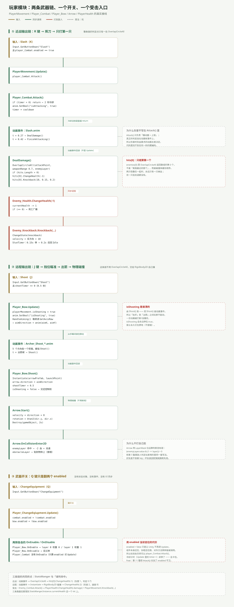
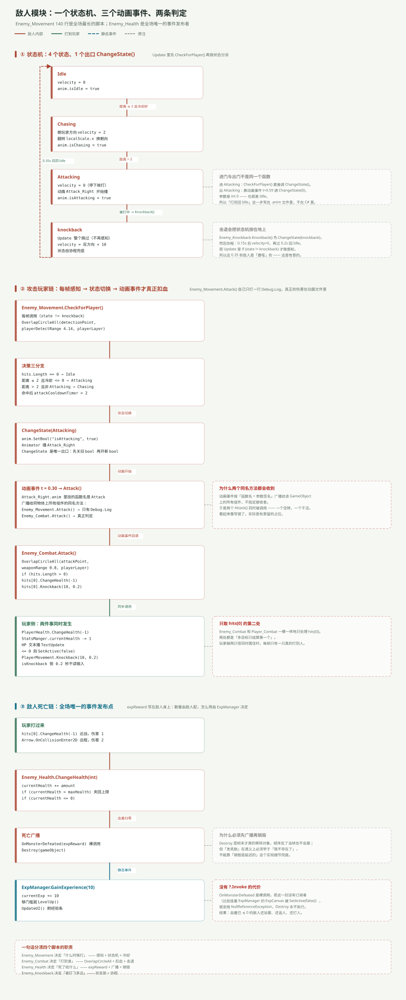

一句话说清
玩家和敌人这两个模块，外表看是「谁打谁」，实际是四个脚本各管一件事：
PlayerMovement决定「能不能动」Player_Combat决定「打没打中」Enemy_Movement决定「什么时候打」Enemy_Health决定「死了给什么」
分清楚之后，那些看起来像 bug 的行为（打两下不死、卡在原地不动、敌人打完不回 Idle）都能一眼定位到是哪个脚本没接上。
玩家模块：5 个脚本、3 条链
| 脚本 | 行数 | 职责 |
|---|---|---|
PlayerMovement | 71 | 读输入、写 rb.velocity、翻转朝向、被击退 |
Player_Combat | 62 | 冷却、播动画、OverlapCircleAll 判定 |
Player_Bow | 71 | 八向瞄准、出箭、切动画层 |
Arrow | 56 | 飞行、碰撞、插墙 |
PlayerHealth | 24 | 扣血、刷 HP 文本、死亡隐藏 |

这三条链的输入全是同一个来源——InputManager.asset 里的轴。PlayerMovement、Player_Bow、Player_ChangeEqiupment 三个脚本各自在自己的 Update() 里轮询输入，没有统一的输入层。
近战链：动画事件才是判定点
Attack() 里没有伤害，这是第一个反直觉的地方：
public void Attack()
{
if (timer <= 0)
{
anim.SetBool("isAttacking", true);
timer = cooldown; // 2 秒
}
}它只做两件事：播动画、上冷却锁。真正的伤害在 Slash.anim 的帧事件里：
t = 0.27 → DealDamage()
t = 0.42 → FinishAttacking()DealDamage() 才是判定：
Collider2D[] enemies = Physics2D.OverlapCircleAll(
attackPoint.position, StatsManger.Instance.weaponRange, enemyLayer);
if (enemies.Length > 0)
{
enemies[0].GetComponent<Enemy_Health>().ChangeHealth(-StatsManger.Instance.damage);
enemies[0].GetComponent<Enemy_Knockback>().Knockback(
transform, StatsManger.Instance.knockbackForce,
StatsManger.Instance.knockbackTime, StatsManger.Instance.stunTime);
}这个写法的好处：伤害时刻由美术的动画长度决定，代码里找不到「等 0.3 秒」这种硬编码。改动画就是改手感。
代价是：代码里看不出伤害发生在什么时候。只读 Player_Combat.cs，你会以为 Attack() 一调就掉血；必须打开 Slash.anim 才知道真实时序。
远程链：交给物理引擎
远程链不需要 OverlapCircleAll，因为箭是真实的 Rigidbody2D：
| 阶段 | 谁做的 | 关键行 |
|---|---|---|
| 瞄准 | Player_Bow.HandleAiming() | GetAxisRaw → aimDirection → anim.SetFloat(aimX, aimY) |
| 出手 | Player_Bow.Shoot()（动画事件） | Instantiate(arrowPrefab, launchPoint.position) |
| 飞行 | Arrow.Start() | velocity = direction * 8，Destroy(gameObject, 2) |
| 命中 | Arrow.OnCollisionEnter2D | 层位运算判断 enemyLayer / obstacleLayer |
Arrow 的层判断用的是位运算，和敌人的判定是同一种写法：
if ((enemyLayer.value & (1 << collision.gameObject.layer)) > 0)
{
collision.gameObject.GetComponent<Enemy_Health>().ChangeHealth(-damage);
collision.gameObject.GetComponent<Enemy_Knockback>().Knockback(...);
}好处是不依赖 tag，只用 Layer；坏处是层配错就静默失效——箭穿过去，什么都不会发生，也不报错。
武器切换：Q 键只是翻两个 enabled
void Update()
{
if (Input.GetButtonDown("ChangeEquipment"))
{
combat.enabled = !combat.enabled;
bow.enabled = !bow.enabled;
}
}加上 Player_Bow 的 OnEnable / OnDisable 负责切动画层权重（0 → 1），整套切换就完成了。
但 enabled 不是状态位，它只控制** Unity 是否调用该组件的 Update / OnEnable 等回调**：
- 组件还在、协程还在跑
- 对外方法照样能被调用（
player_Combat.Attack()在别处仍可调） Player_Combat.Update()里的冷却计时会停——切回来时 timer 保留旧值
第 11 篇给 Attack() 补了 enabled 守卫，就是为了堵住「禁用状态下仍能攻击」这条路。
受击链：敌人打你的那一条
受击不在玩家模块里发起，而是敌人主动：
Enemy_Combat.Attack()
→ OverlapCircleAll(attackPoint, 0.8, playerLayer)
→ hits[0].GetComponent<PlayerHealth>().ChangeHealth(-3)
→ hits[0].GetComponent<PlayerMovement>().Knockback(transform, 10, 0.2)玩家侧分两件事同时发生：
PlayerHealth.ChangeHealth(-3)：改StatsManger.currentHealth，播TextUpdate，≤ 0 就SetActive(false)PlayerMovement.Knockback(...)：isKnockback = true→ 锁 0.2 秒不读输入 → 协程结束后解锁
这里有个不对称：敌人打玩家给 3 点伤害，玩家打敌人给 1 点。玩家 20 血，敌人 3 血——被怪打一下要挨七下才死，打死一只怪要砍三刀。数值上「怪很硬、人很脆」的感觉其实是反的。
敌人模块：4 态状态机

Enemy_Movement 是全工程最长的脚本（140 行），核心就是这个状态机：
| 状态 | 行为 | 谁把状态切走的 |
|---|---|---|
Idle | velocity = 0 | 感知到玩家且距离 > 2 → Chasing |
Chasing | 朝玩家跑，翻转朝向 | 距离 ≤ 2 且冷却好 → Attacking |
Attacking | velocity = 0，播 Attack_Right | 动画事件 t = 0.59 → ChangeState(0) |
knockback | Update 整个跳过 | 协程 0.35s 后 → Idle |
ChangeState() 是唯一出口，写法是「先关旧 bool，再开新 bool」，所以不会出现两个动画状态同时为 true。
注意第三行：「打完回 Idle」这一步不在 C# 里，在 .anim 文件里。
三个动画事件与两个同名 Attack()
Attack_Right.anim 里挂了三个函数：
| 时间 | 函数 | 实际接收者 |
|---|---|---|
| 0.30 | Attack() | Enemy_Movement.Attack()（只 Debug.Log）+ Enemy_Combat.Attack()（真判定） |
| 0.59 | ChangeState() | 参数是 int 0 → 即 Idle |
| 0.59 | ChangeState() | 同上一模一样，重复挂了一次 |
Unity 动画事件按「函数名 + 参数签名」广播给该 GameObject 上所有组件，不指定接收者。 所以两个同名 Attack() 会同时被调用：一个空转，一个干活。
这不是 bug，是留了占位——Enemy_Movement.Attack() 里那行 Debug.Log("Attack") 就是打算以后接掉落或特效的地方。但它是个很隐蔽的坑：只读 Enemy_Movement.cs，你会以为敌人的攻击逻辑就在那个 Debug.Log 里。
五个坑
① 只结算 hits[0]。 玩家和敌人两边都是。两只怪叠在一起时，永远只有一只掉血；玩家被围住时，每帧只有一只真的打到人。
② OnMonsterDefeated 没有 ?.。 没人订阅时抛 NullReferenceException，后面的 Destroy 不执行 → 血量已 ≤ 0 的敌人还站着、还追人。
③ isShooting 只有动画事件能清。 抬手后动画被打断，PlayerMovement 会永久停在「不许动」分支。
④ 死亡只是 SetActive(false)。 PlayerHealth 挂在 Player 自己身上，关掉之后再也收不到任何回调；没有重生、没有死亡界面。
⑤ Slash 和 Interact 都绑在 K 上。 走进店主触发圈按 K：一边挥刀、一边开店，100% 复现。
这个模块与外界的接缝
| 方向 | 接口 | 形态 |
|---|---|---|
| 出（玩家 → 世界） | Enemy_Health.ChangeHealth(-n)、Enemy_Knockback.Knockback(...) | 直接引用 |
| 出（敌人 → 世界） | OnMonsterDefeated(expReward) | 静态事件 |
| 入（敌人 → 玩家） | PlayerHealth.ChangeHealth(-n)、PlayerMovement.Knockback(...) | 直接引用 |
| 数据 | StatsManger.Instance 的 8 个字段 | 单例读取 |
| 表现 | healthText、healthTextAnim、anim | 直接引用 |
玩家模块对外只有「写别人的血」这一件事，敌人模块对外有「写别人的血」和「发一个事件」两件事。 这就是为什么敌人是全场唯一的事件发布者。
一句话总结
近战和远程的判定方式完全不同（OverlapCircleAll vs 物理碰撞），但它们的触发时机是同一个设计：都挂在动画事件上。敌人那边同样如此——状态机的进出口分别写在 C# 和 .anim 里，一半逻辑不在代码里。
下一篇：成长链。